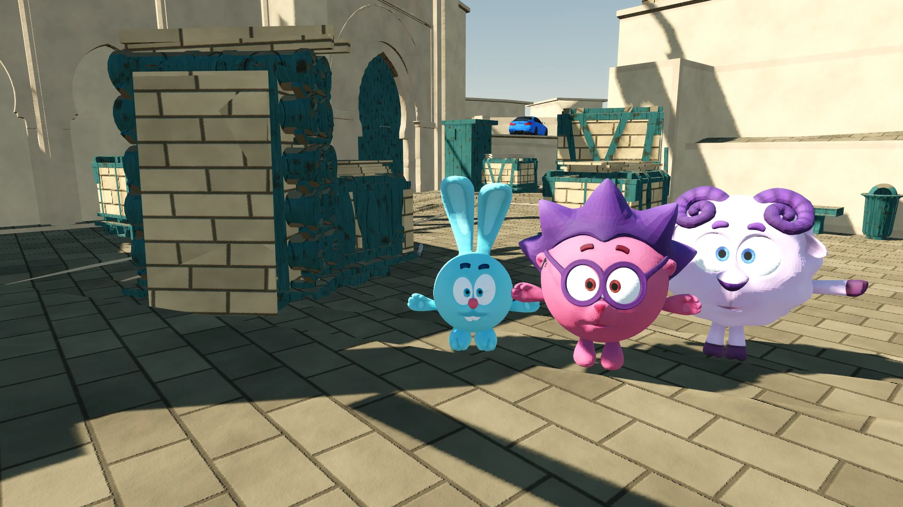

Своя компания
Создай комнату, пригласи друзей по QR-коду и играйте по общей Wi-Fi-сети.

SMESHARIKI / ТАКТИЧЕСКИЙ ШУТЕР
Знакомые герои.
Другие правила.
Любимые карты, неожиданные персонажи
и матчи, которые хочется повторить.
01 / ВНУТРИ ИГРЫ
Зайди на тренировку, брось вызов ботам или собери друзей в одной Wi-Fi-сети. Остальное решится на карте.
Создай комнату, пригласи друзей по QR-коду и играйте по общей Wi-Fi-сети.
Боты всегда готовы. Выбирай сложность и оттачивай навыки без интернета.
Настрой кнопки под себя и выбери графику — вплоть до Ultra с гильзами и эффектами.
02 / ТЕРРИТОРИЯ ИГРЫ
Три карты. Три режима.
Закладка бомбы, командный бой
или каждый сам за себя.
ГОТОВО К УСТАНОВКЕ
Скачай APK, установи игру
и выбирай свою сторону.
v1.8.4
12 сентября 2026
Играете с друзьями? Установите одинаковую версию на все устройства.
03 / БЫСТРЫЙ СТАРТ
Без регистрации.
Просто установи и играй.
Открой сайт на Android и нажми кнопку скачивания. Дождись загрузки файла.
Открой APK. Если Android попросит разрешение, разреши установку для своего браузера или файлового менеджера.
Нажми «Установить», затем «Открыть». Выбери персонажа и начинай матч.
Скачай новую версию APK и установи поверх текущей. Удалять игру перед обновлением не нужно. Для сетевого матча обновитесь вместе с друзьями.
Да. Бой с ботами и тренировка доступны без интернета. Для игры с друзьями подключите устройства к одной Wi-Fi-сети или точке доступа телефона, создайте комнату и подключитесь по QR-коду. Подключитесь до начала матча; хосту нужно оставаться в игре.
Эта версия выпущена для Android. На компьютере APK можно запускать через Android-эмулятор. Отдельной версии для Windows и iPhone здесь нет.
Android 5.0 или новее и поддержка OpenGL ES 3.0. Освободи место для APK и установленной игры. Если игра работает медленно, снизь качество графики в настройках: Ultra рассчитан на более мощные устройства.